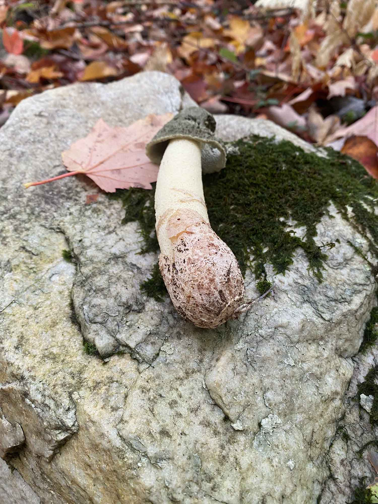
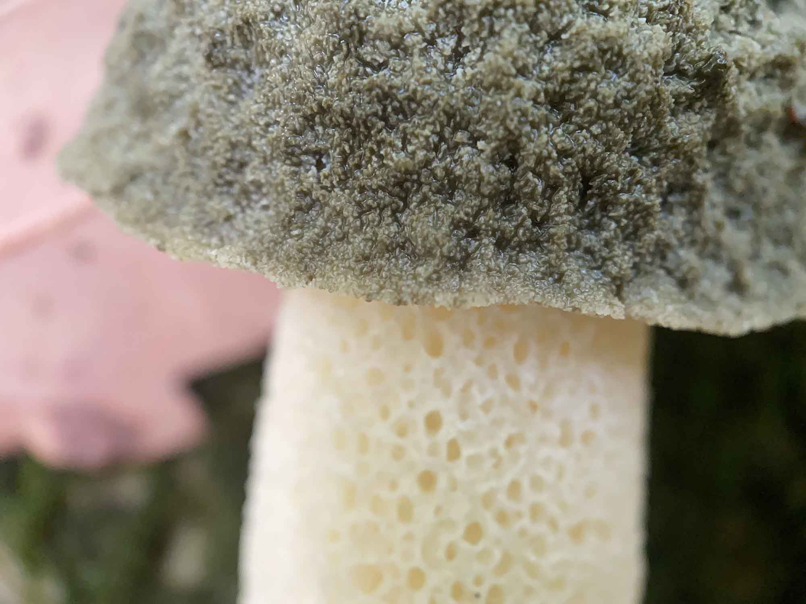
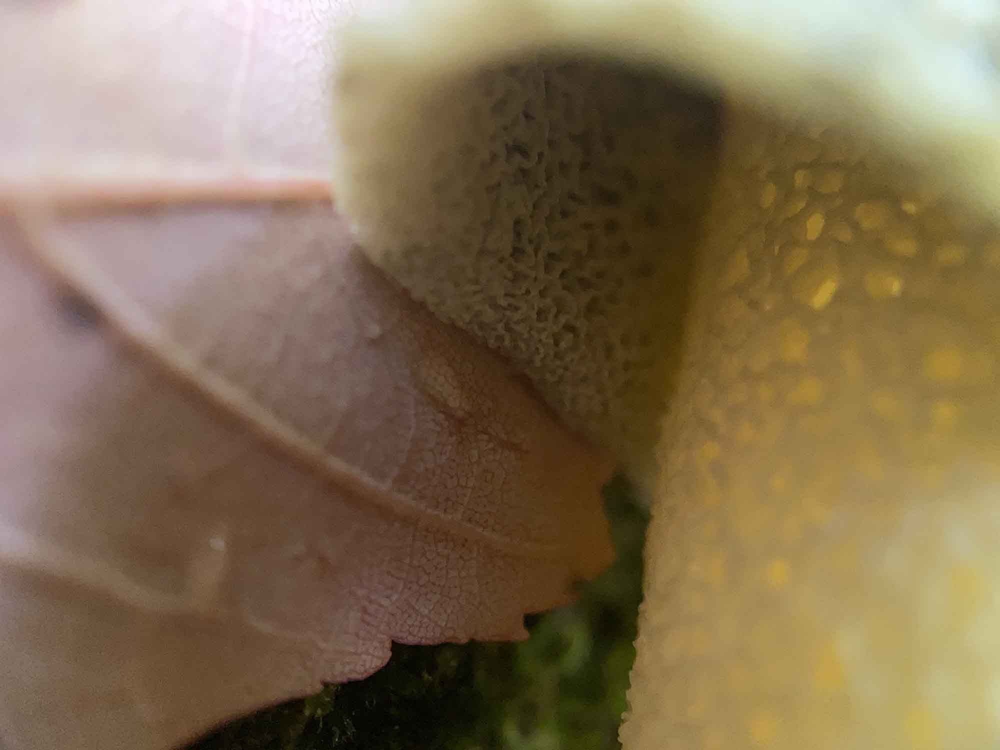
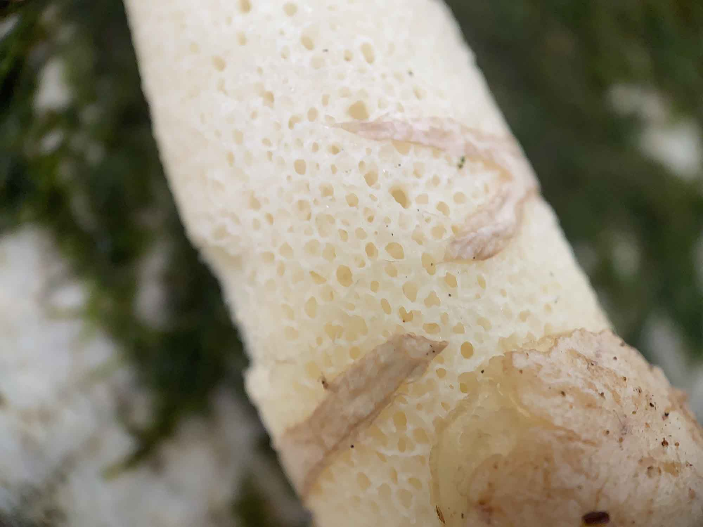
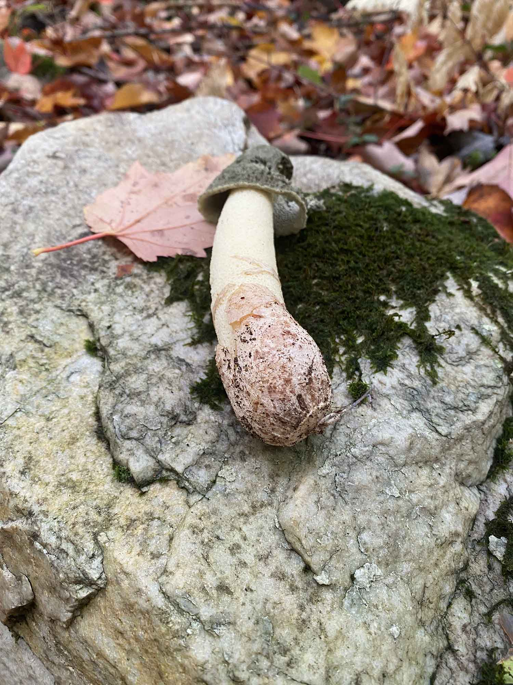
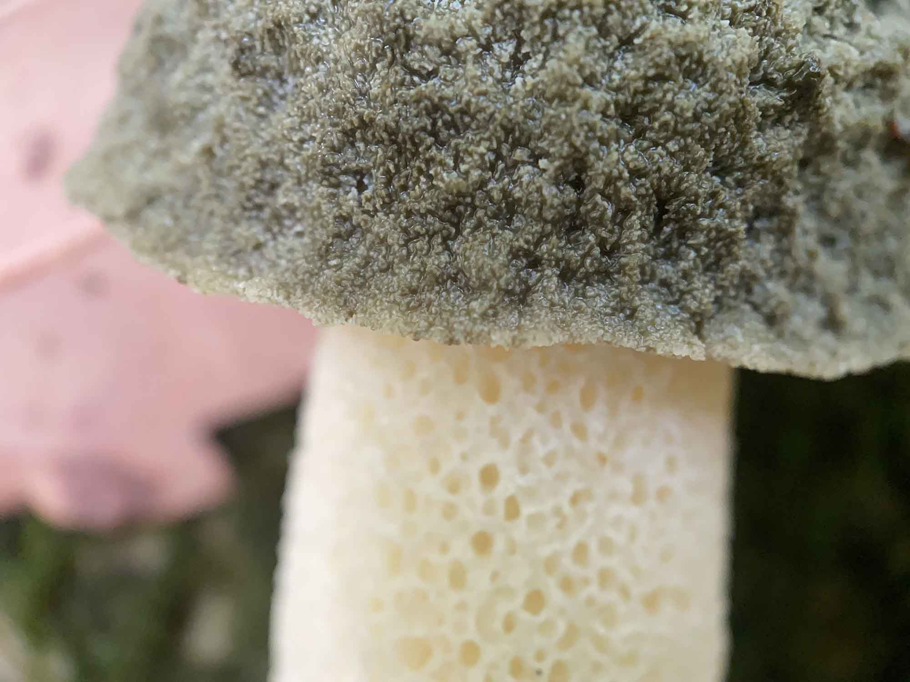
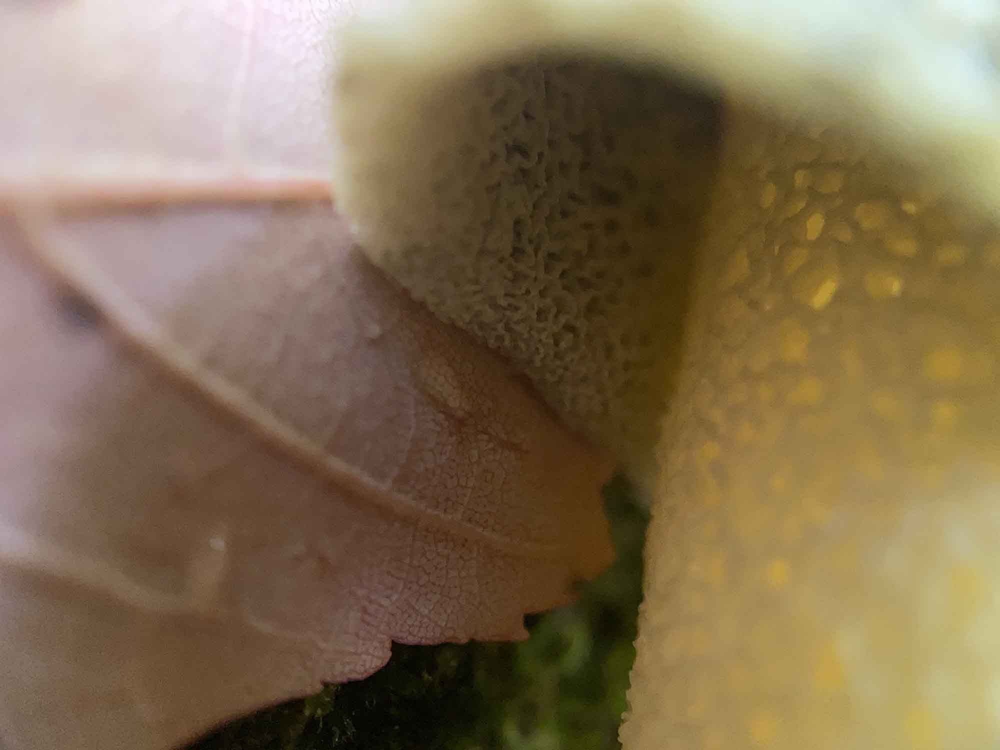
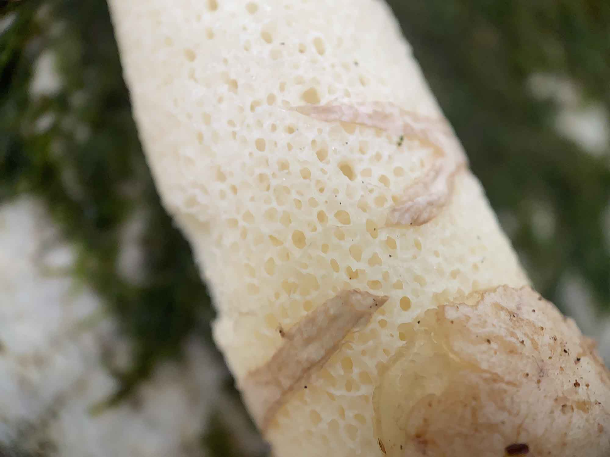

September 30, 2020
| Observation: | Last Observation: |
|---|---|
| First & Last | — |
This was my first encounter with a mushroom in the Stinkhorn classification, though I had I had read some about them. Very quickly, it became apparent why they are aptly named "stink" horns.
This mushroom had a very distinct and potent smell. One that will remain on your hands if you handle the mushroom, which was a mistake that I made out of interested in it's spongy stem.
 






